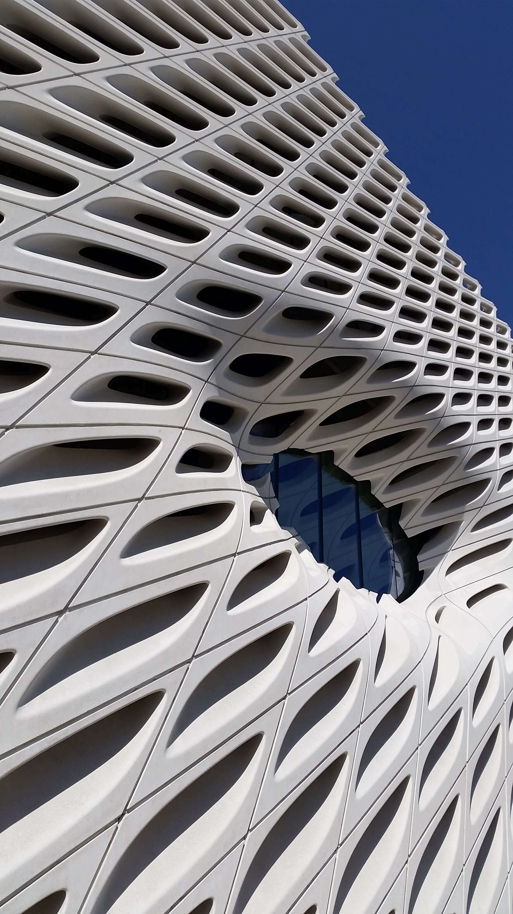
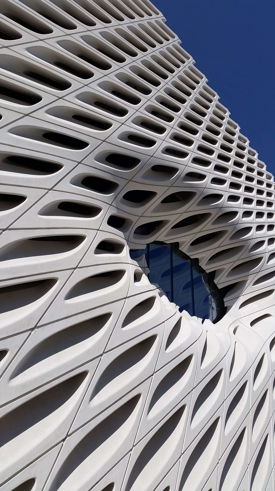

Zach Cohen
Hobbyist photographer in Phoenix, Arizona
“What makes photography a strange invention is that its primary raw materials are light and time.” – John Berger
Notre Dame Cathedral, Paris, 2013
 Kensington Gardens, London, 2013
Kensington Gardens, London, 2013
 Kensington Gardens, London, 2013
Kensington Gardens, London, 2013
 La Jolla, California, 2019
La Jolla, California, 2019
 Rockport, Massachusetts, 2017
Rockport, Massachusetts, 2017
 Sedona, Arizona, 2018
Sedona, Arizona, 2018
 Flagstaff, Arizona, 2019

The Broad Museum, Los Angeles, 2016
Flagstaff, Arizona, 2019

The Broad Museum, Los Angeles, 2016